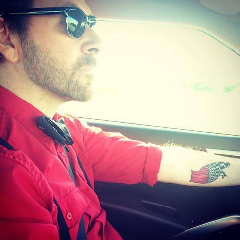
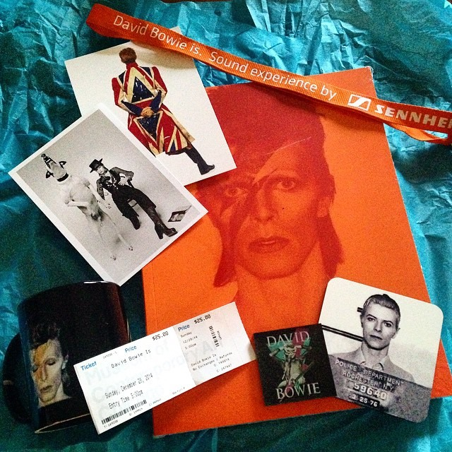

WHO IS MUSEOPUNK?
 Museopunk is the brainchild of Jeremy Bennett, a graduate of the Museum Studies program at Kent State University. A lifetime lover of modern art and alternative music, Jeremy is dedicated to merging the two forward-thinking genres into a single idea: making museums punk.
Jeremy boasts an extensive internal database of pop culture, with special emphasis on David Bowie, David Byrne, and David Lynch. When he's not killing crosswords over morning coffee, he's often painting pop art pieces [seen above], and obeying Oxford comma rules.
WHAT IS MUSEOPUNK?
MUSEO- from mu·se·ol·o·gy /,myōōzē'äləjē/ noun: museology 1. the science or practice of organizing, arranging, and managing museums.
Museology, or museum studies, is the study of museums, museum curation, and how museums developed into their institutional role in education through social and political forces.
-PUNK from
punk
/pəNGk/
noun: punk or noun: punk rock
1. a criminal or hoodlum.
2. a loud, fast-moving, and aggressive form of rock music, popular in the late 1970s and early
1980s.
Punk is a social and musical movement rooted in rebelling against the established order.
Museopunk is the study of how museums can become social institutions dedicated to the education and inclusion
of entire communities and not just the established few. For too long our museums have held on to traditions that
exclude underserved and underprivileged communities. Museums are full of rules that say "do not." Do no touch, do
not make noise, do not...
These rules say you are not welcome.
Museopunk is about how to say "do" instead of "do not" and "you are welcome" instead of "you are not." Museopunk
highlights museums that are breaking tradition and are focused on being punk. Museopunk provide mixtapes to get
you in the mood to visit museums. Museopunk links to like-minded sites that are dedicated to breaking down walls.
Loud, agressive, rebellious...that is MUSEOPUNK.